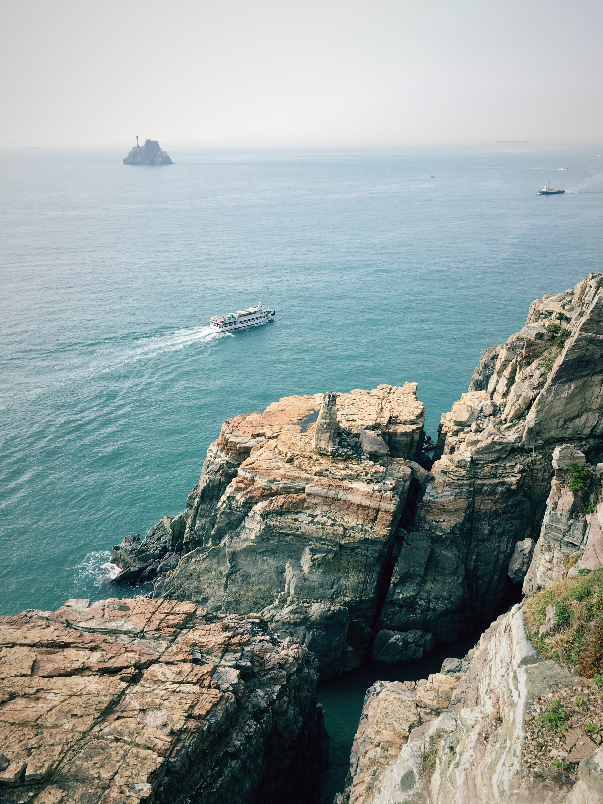

that a complex chiefdom ruled by powerful individuals was present in the Busan area in the 4th century, just as Korea's Three Kingdoms were forming. The mounded burials of Bokcheon-dong were built along the top of a ridge that overlooks a wide area that makes up parts of modern-day Dongnae-gu and Yeonje-gu. Archaeologists excavated more than 250 iron weapons and ingots from Burial No. 38, a wooden chamber tomb at Bokcheon-dong. From the beginning of the 15th century, the Korean government designated Busan as a trading port with the Japanese and allowed their settlement.[13] Other Japanese settlements in Ulsan and Jinhae diminished later, but the Busan settlement continued until Japan invaded Korea in 1592. After the war, diplomatic relations with the new shogunate in Japan were established in 1607, and Busan was permitted to be reconstructed. The Japanese settlement, though relocated into Choryang later, continued to exist until Korea was exposed to modern diplomacy in 1876. In 1876, Busan became the first international port in Korea under the terms of the Treaty of Ganghwa.
